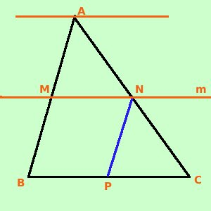

|
Corollario Se una retta divide due lati di un triangolo in parti ordinatamente proporzionali allora essa e' parallela al terzo lato
Applicando la proprieta' del comporre all'ipotesi posso scrivere (AM + MB) : MB = (AN + NC) : NC AB : MB = AC : NC Per assurdo neghiamo la tesi: supponiamo che MN non sia la parallela e sia invece MN' la parallela: allora per il teorema di Talete posso scrivere AB : MB = AC : NC' Ma per ipotesi vale AB : MB = AC : NC E per l'unicita' del quarto proporzionale deve essere NC' = NC quindi MN coincide con la parallela alla retta BC, come volevamo. Come esercizio vediamo in particolare cosa succede quando il punto in cui la retta taglia il lato e' il punto medio del lato stesso: In ogni triangolo la parallela ad un lato passante per il punto medio di un altro lato divide il terzo lato a meta' vale anche l' inverso: In ogni triangolo la congiungente i punti medi di due lati e' parallela al terzo lato  Dimostriamo la prima parte considero la retta m parallela alla base BC e passante per il punto medio M del lato AB Devo dimostrare che N e' il punto medio del lato AC
Dimostrazione: Essendo la retta m parallela a BC ho che due rette mi individuano un fascio di rette parallele (per indicarlo, in figura, ho messo la retta del fascio passante per A); vale il teorema di Talete quindi posso scrivere AM : MB = AN : NC Essendo AM = MB sono uguali i primi due termini della proporzione; avro' di conseguenza che sono uguali anche il terzo e quarto termine della proporzione, quindi: AN = NC cioe' N e' il punto medio del lato AB Potevo fare la costruzione mandando da N la parallela (in blu) al lato AB e quindi avrei ottenuto il punto P: punto medio del lato BC Dimostriamo ora l'inverso So che M e' il punto medio del lato AB: AM = MB inoltre N e' il punto medio del lato AC: AN = NC Devo dimostrare che la retta MN e' parallela a BC
Dimostrazione: Considero la retta MN' parallela a BC ho che due rette mi individuano un fascio di rette parallele (per indicarlo, in figura, ho messo la retta del fascio passante per A); vale il teorema di Talete quindi posso scrivere AM : MB = AN' : N'C Essendo AM = MB sono uguali i primi due termini della proporzione; avro' di conseguenza che sono uguali anche il terzo e quarto termine della proporzione, quindi: AN' = N'C cioe' N' e' il punto medio del lato AC Pero' siccome per ipotesi N e' il punto medio del lato AC segue che N ed N' devono coincidere e quindi la retta MN = MN' e' parallela alla retta BC., come volevamo Anche qui ripeto che nella figura sembra che la retta MN' non sia parallela alla retta BC, ho dovuto farla cosi' per fartela vedere, ma tu devi immaginare che io l'abbia tracciata vicinissima alla retta MN in modo da non poter capire dal disegno quale delle due rette MN e MN' sia la vera parallela alla base |

|

|

|

|